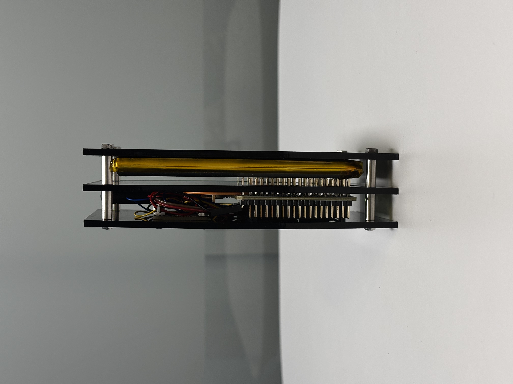
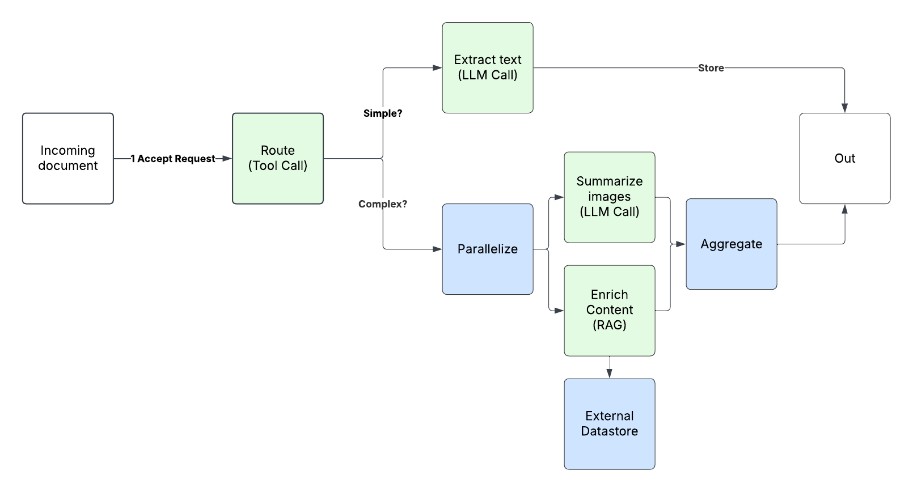
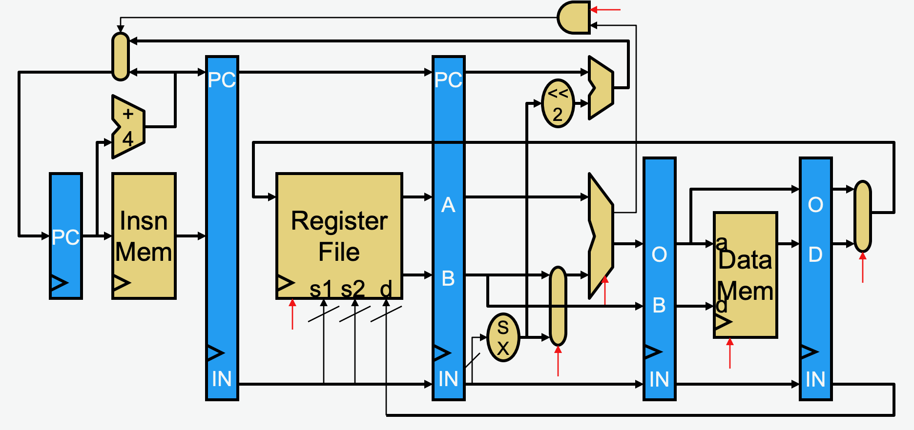
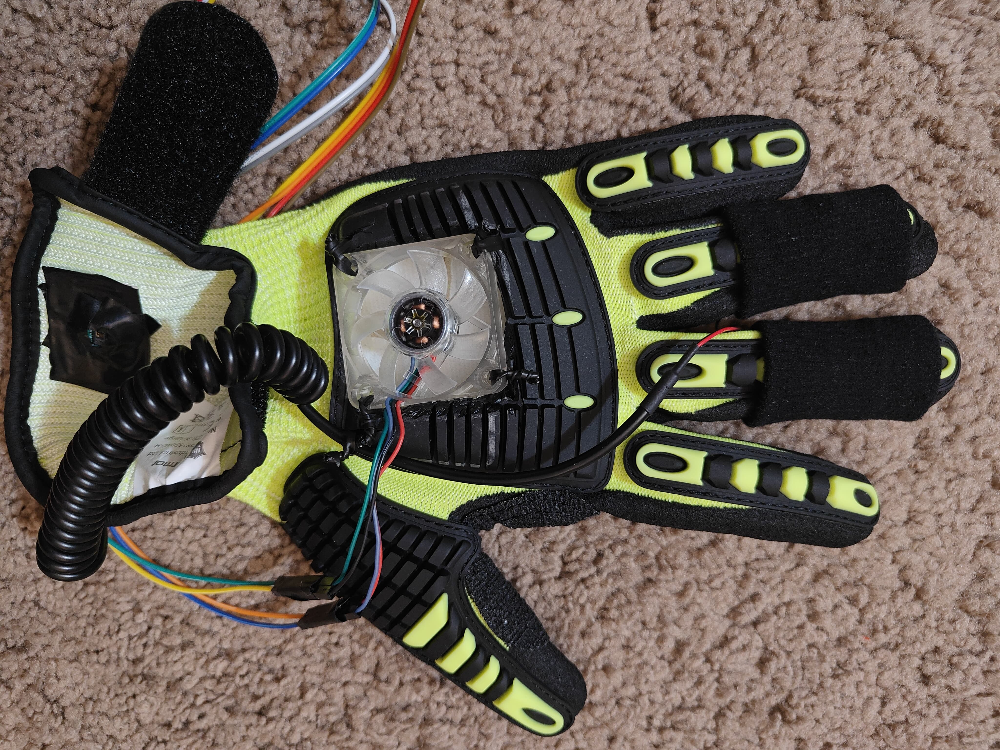

Projects

VendGuard — Health Monitoring for Vending Machines
Zephyr RTOS on STM32WL55JC with TMP117 and ADXL345, LoRaWAN 1.0.4, FUOTA, edge anomaly detection, CI with GitHub Actions, and telemetry toward AWS / InfluxDB (~25% maintenance cost target).

IoT-Enabled Hand Exoskeleton
EMG-based local control with WiFi remote operation (~1° finger resolution). FreeRTOS on SAMW25 for EMG, IMU, and servos; custom Altium PCB.

Penske — Advanced Analytics
Six AI use cases for logistics/fleet ops; agentic meeting pipeline on Bedrock, S3, Lambda; internal deployment for security and IP protection.

Pipelined RISC-V Processor
Five-stage RV32IM pipeline with forwarding, load-to-use and divide-to-use stalls; cycle-accurate simulation and timing analysis.

R.E.F.R.E.S.H — F1 Racing Glove
Pulse oximetry and GSR on a dual-MCU platform (ATmega328PB + ESP32), PWM cooling fans, and custom ML for hydration classification (~98% accuracy).